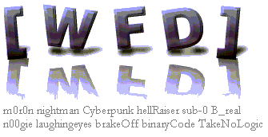
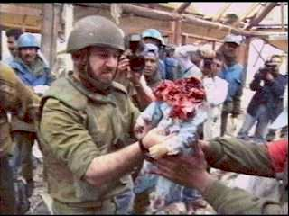
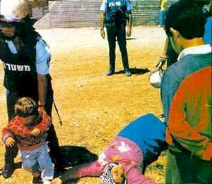
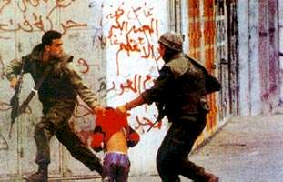

Newspaper
Association of America (www.naa.org)
has been targeted and hacked by m0r0n
and
nightman of

to spread the truth!
Please read our message and see
the truth others would rather have suppressed:
The
newspapers of America are full everyday with flagrant lies about the
events happening in the Middle East. In fact, the entire American
media distorts the truth and twists it as to manipulate the minds of the
American people. Suffering Palestinian
children are portrayed as "terrorists", simply because they
fight for their freedom from an oppressor that seeks to destroy their
hopes and dreams. 1947,
All of what is now modern Israel was Palestine. Out of seemingly nowhere,
ultra-nationalistic Jews came out of nowhere, butchered and killed thousands
upon thousands of Muslim and Christian Palestinians in order to steal the
authority. Babies were beheaded. Children's throats were slit.
500 Palestinian villages were wiped off the map. Hundreds of Mosques and
Churches were eradicated. Over 5 Million Palestinians were thrown out of
their homes and forced to live in refugee camps in Gaza, West Bank, and
neighboring countries. And for 50+ years, the Palestinian people have been
indiscriminately treated as 2nd Class Citizens, denied not only the land that is
rightfully theirs, but also the basic human rights of common society.
This...is the great injustice of the Middle East...PALESTINIAN CHILDREN
LIVE IN SEVERE AND UNIMAGINABLE POVERTY. THEY DON'T HAVE THE TOYS, GAMES,
AND AMENITIES THAT OTHER CHILDREN LOVE AND ENJOY. INSTEAD, THEY SEE
ISRAELI SOLDIERS BOMBARD THEIR HOMES, SLAUGHTER THEIR PEERS, RAPE THEIR
MOTHERS, AND ABUSE THEIR FAMILY DAILY. IT IS VERY NATURAL FOR
SOMEONE WHO GOES THROUGH THIS TO DEMAND A BETTER LIFE. But
instead, the vast majority of American newspapers blame the Palestinians for the
violence, even though 330 Palestinians have died compared to 41 Israelis, and
that 17,000 Palestinians, 4,200 of them children, have been seriously wounded,
as opposed to 150 wounded on the Israeli side.
|
How the Palestinians
feel:
...Imagine
if some guests come to your house and beg you to stay in your house
because it's freezing outside. You feel sorry for these people
because they've suffered alot, so you let them stay in your
guestroom. The next day, when you come back from work, you walk
into your house. Your children are dead. Your wife is
raped. Your mother and father are missing. And the same
guests you let in the other day come up in front of you, point their
rifles at you, and say "Negotiations?" What would you
do?
If
somebody kicks you out of your house into the street, and then 52 years
later offers you your front yard back, what would you do? Will
you accept your front lawn back by signing an agreement with the people
who stole your house 52 years ago and killed your children and raped
your wife in the process? This is what has happened to the
Palestinian people!
|
The People of Palestine -
Oppressed for decades by Israel:
|
This
is Ariel Sharon, a war criminal who was directly responsible for
the murders of 30,000 men, women, and children. He ordered
bombings on clearly marked hospitals and schools in Lebanon in
1982, and he was the one who began the current intifada. On
September 29, 2000, this pathetic, sub-human man and 1000 Israeli
troops stormed the streets of Jerusalem, shooting at anything and
anyone in their way. When they reached the Al-Aqsa mosque
holy to Muslims, they prevented Muslim worshippers from going in
for prayer. The American media calls this a "provacative
visit." It was not a visit: on the other hand, it was a
meticulously planned murder spree intended to provoke the
Palestinians. Now this shithead is about to become prime
minister in Israel, a racist, fascist state that denies a whole
people of the independence Americans take for granted.

A
Palestinian baby "terrorist" beheaded by the Israeli Defense
Forces... Palestinian children in refugee camps see
their brothers, sisters, and parents being insulted and abused by
the IDF daily. The Israeli army shoots tank shells at
Palestinian refugee camps everyday.
|
|
 |

Israeli
soldiers violently push aside a little boy after murdering
his mother...The little boy is in shock and disbelief, but
the events that he has witnessed have left him with childhood
scars that will never heal. His life is destroyed.
He's alone...He has no one now...He has nothing left in life...
Israeli
soldiers have taken away the mother that bore and loved him...
This baby was murdered when Israeli
rockets fired from American-bought gun ships hit his home.

Israeli soldiers violently drag a 6 year
old Palestinian boy into prison where he will be
severely beaten, deprived of sleep and threatened with the use of electric
shock and firearms. His crime? Being a Palestinian.
END
THE ILLEGAL ISRAELI OCCUPATION. STOP THE ISRAELI HOLOCAUST AGAINST
THE PALESTINIAN PEOPLE. |
|
Israel "a
supposed
ally" of the United States, bombed an American ship:
It
was a bright summer day on the 8th of June, 1967. The United States Navy
intelligence ship, the U.S.S. Liberty, was peacefully sailing on the
clear waters of the eastern Mediterranean. It just so happened that on
that very day, the government of Israel was finalizing its preparations
for the invasion of Syria which was planned for the following day. The
intelligence ship's full-time mission was the interception of all radio
communications in the area, so a decision was made by the Israeli
government that the U.S.S. Liberty presented a threat to the secrecy of
their war plans. On that fateful day Israeli warplanes and
torpedo boats attacked the U.S.S. Liberty with a merciless barrage of
torpedos, machine gun fire, rockets, and napalm. They attacked her
in wave after wave, again and again and again. They blasted a 40-foot
hole in the side of the ship with their torpedoes. When the Liberty
failed to sink they sent in helicopter gunships and machine-gunned the
lifeboats. The clear intent of the attackers was that no American be
left alive. The attack took place in broad daylight and lasted for
over two hours. Only when the Sixth Fleet had sent rescue aircraft did
the attackers finally withdraw. All through the assault, the ship was
flying a clearly visible and brand new American flag. Israeli
reconnaissance planes had been tracking the Liberty for five and one
half hours prior to the attack. 171 American sailors were casualties,
and 34 were killed.
Israeli
Logic:
"If
you kill one person, you are a murderer, if you kill ten people
you are a celebrity, and if you kill a quarter of a million
people, you get invited to a peace conference."
|

All she did was wave a peace
sign...All she was saying was Give
Peace a Chance. Even then the Israeli pigs fired at her.
According
to Israel, if a little girl waves a peace sign at you, you fire
tear gas shells at her. (Of course, because little girls
are a grave threat to Israel's 'national security'). May
God's damnation be on Israel.
Having
Israeli soldiers shoot at Palestinian ambulances, fire missiles at kids,
and enforce economic hardship on the Palestinians is not a good way of
promoting peace m0sad. That only makes the Palestinian people more
determined to get their freedom from you Israeli oppressors. The
bombings happen because the people Israeli oppresses want change.
They're sick of seeing their children being shot dead in cold blood by
the sub-human Israeli soldiers. They're tired of being insulted and
abused by the IDF in front of their children's eyes. They're fed
up with Israeli soldiers routinely firing at their homes, farms,
ambulances, etc.
All the Palestinians want is their basic human
rights...the right to live in the native land of Palestine they were
born on, the right to be happy, to live life...the very rights Israeli
scum deny them.
Our message to the newspapers of
America
STOP BLINDLY SUPPORTING
ISRAEL WHICH IS, UNDOUBTEDLY, THE LAST THEOCRACY/FASCIST STATE
LEFT IN THE WORLD. START TELLING THE TRUTH ABOUT WHAT HAPPENED AND IS HAPPENING
IN PALESTINE, as well as the truth about Kashmir and Chechnya.
Reason for
targeting this site: We have
absolutely nothing against this organization. We targeted this site because
it represents all the newspapers of America!
Note to the
admin: Do not worry! Nothing was harmed or deleted (just renamed your
main page and deleted the logs -- for our safety reasons. Our motto is to spread
the word of truth & globally aware people and organizations of heart tearing
facts.
Special thanks
and hugs to sub-0 and Cyberpunk of WFD and shouts to everyone who gives us
shouts and supports our cause.